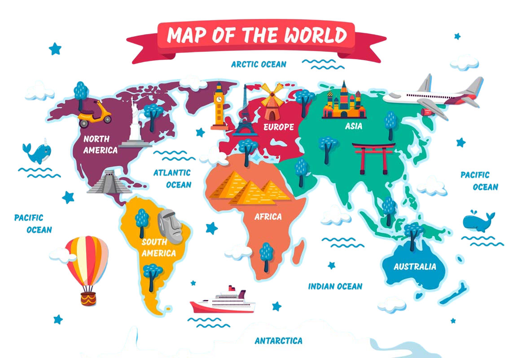

Страны мира
Сколько всего стран в мире – вопрос междисциплинарный. Этот термин используется в страноведении (раздел географии), политологии, истории, международном праве. В зависимости от предмета науки выделяются критерии, определяющие, является ли территория страной (или нет). Поэтому их число в некоторых источниках достигает 300 – зависит от того, как считать.
